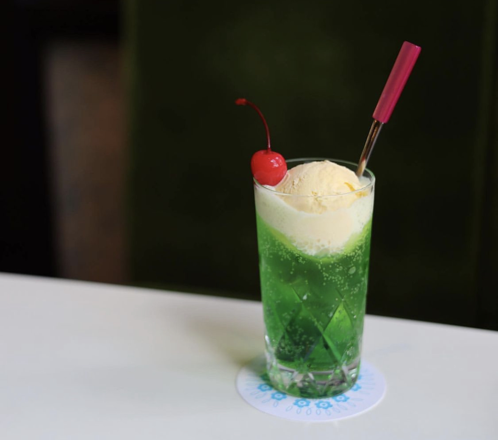

コーラやルートビアを主な材料として、バニラアイスを載せたもの。
日本では、メロンソーダにバニラアイスを載せたものが主流である。
最近では緑色だけでなく、青色やピンク色のもあります。

1955年創業の老舗の喫茶店。
2004年に改装されましたが、表の看板は創堂当時のものだそうです。
珈琲が美味しいことで有名ですが、クリームソーダも負けていません。
『THE クリームソーダ』といったシンプルなクリームソーダを提供してくれます。
JR御茶ノ水駅から徒歩1分
電話番号：03-3292-9654
営業時間：08：00〜19：00
定休日：日曜、祝日